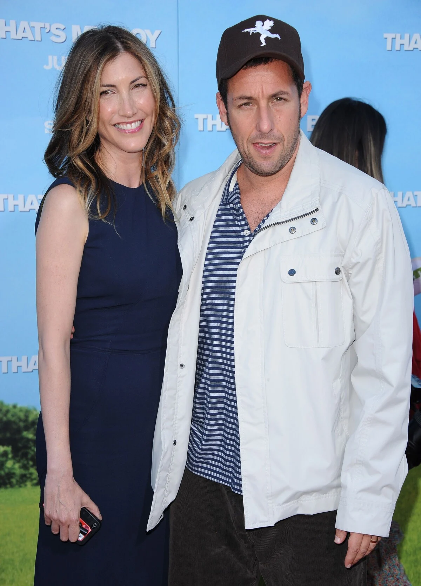
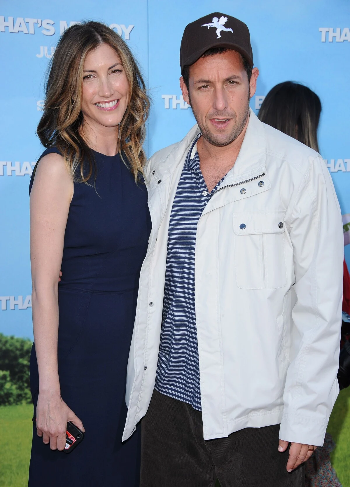
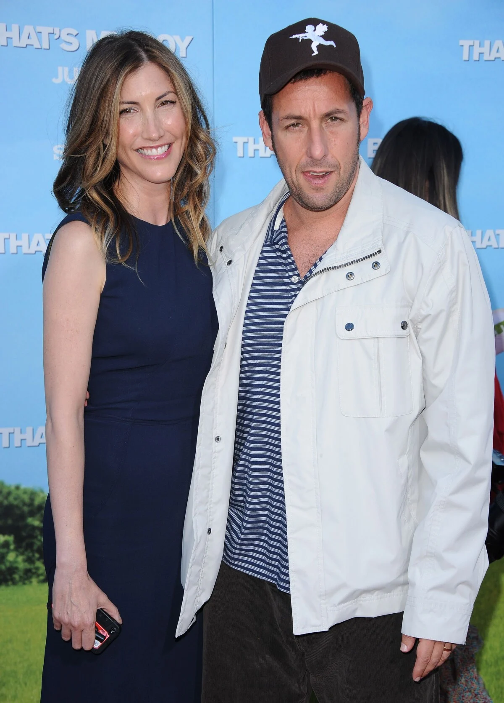

Adam Richard Sandler nasceu em 9 de setembro de 1966, no Brooklyn, em Nova York. Filho de Judy, uma professora de jardim de infância, e Stanley Sandler, um engenheiro elétrico, ele cresceu em Manchester, no estado de New Hampshire. Desde jovem, Sandler demonstrava um talento natural para a comédia, o que o levou a se apresentar em clubes de stand-up ainda na adolescência. Posteriormente, ele se formou em Belas Artes na Tisch School of the Arts, da Universidade de Nova York, em 1988.
Na vida pessoal, Adam Sandler é conhecido por seu estilo discreto e por manter uma relação estável com a esposa Jackie Sandler, com quem é casado desde 2003. O casal tem duas filhas, Sadie e Sunny, que às vezes também aparecem em seus filmes. Amigo leal e família próxima, ele costuma trabalhar com os mesmos colegas de longa data, como Kevin James, Rob Schneider e Chris Rock. Fora das telas, Sandler é conhecido por seu comportamento humilde e por frequentemente ser visto em situações cotidianas com roupas simples e sorriso no rosto.

O grande ponto de virada na carreira de Sandler veio com sua entrada no elenco do programa Saturday Night Live (SNL), em 1990, onde ficou famoso por suas músicas engraçadas e personagens irreverentes. Após o sucesso no SNL, ele partiu para o cinema e estrelou uma série de comédias de sucesso como Billy Madison (1995), Happy Gilmore (1996), O Paizão (1999), Click (2006) e Gente Grande (2010). Embora tenha sido frequentemente criticado por seu estilo de humor considerado simples ou infantil, sua popularidade com o público sempre foi enorme. Sandler também surpreendeu com performances dramáticas em filmes como Reine Sobre Mim (2007), Embriagado de Amor (2002), Os Meyerowitz: Família Não Se Escolhe (2017) e o aclamado Joias Brutas (2019), que revelou uma faceta mais intensa e madura de sua atuação. Wikipédia - Adam Sandler
Em 1999, Sandler fundou sua própria produtora, a Happy Madison Productions, responsável por muitos de seus filmes e também por projetos de outros comediantes. A empresa é conhecida por seu estilo irreverente e pelo foco em comédias populares. Nos últimos anos, a produtora fechou uma parceria milionária com a Netflix, resultando em vários filmes originais que se tornaram grandes sucessos de audiência na plataforma, como Mistério no Mediterrâneo (2019) e sua continuação.
Apesar de durante muitos anos ser indicado ao Framboesa de Ouro (uma sátira que premia os "piores" do cinema), Adam Sandler conquistou reconhecimento legítimo nos últimos anos. Por Joias Brutas, ele venceu o Independent Spirit Award de Melhor Ator e recebeu elogios unânimes da crítica especializada. Em 2023, foi homenageado com o Prêmio Mark Twain de Humor Americano, uma das maiores honrarias da comédia nos Estados Unidos, consolidando seu legado como um dos grandes nomes do entretenimento. Prêmios